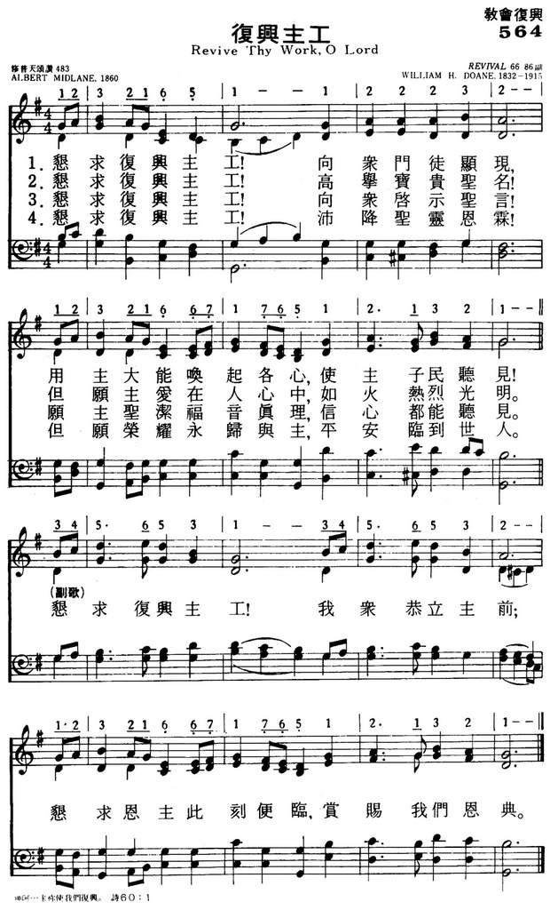

|
|
|
|
1 Revive thy work, O Lord, 2 Revive thy work, O Lord, 3 Revive thy work, O Lord, 4 Revive thy work, O Lord, 5 Revive thy work, O Lord, |
564复兴主工
1.恳求复兴主工！向众门徒显现，
用主大能唤起各心，使主子民听见！ （副）恳求复兴主工！我众恭立主前； 恳求恩主此刻便临，赏赐我们恩典。 2.恳求复兴主工！高举宝贵圣名！ 但愿主爱在人心中，如火热烈光明。 （副）恳求复兴主工！我众恭立主前； 恳求恩主此刻便临，赏赐我们恩典。 3.恳求复兴主工！向众启示圣言！ 愿主圣洁福音真理，信心都能听见。 （副）恳求复兴主工！我众恭立主前； 恳求恩主此刻便临，赏赐我们恩典。 4.恳求复兴主工！沛降圣灵恩霖！ 但愿荣耀永归与主，平安临到世人。 （副）恳求复兴主工！我众恭立主前； 恳求恩主此刻便临，赏赐我们恩典。 |
|
https://www.mred365.cn/szxg/7567.html
 https://hymnary.org/hymn/RS1900/page/80
|
|
|
|
|

-

- Revive Thy Work O Lord - Traditional Christian Hymn & Spiritual Song Lyrics with Orchestral backing music. https://www.youtube.com/watch?v=SALb4k0Ve4E
- Revive Thy Work O Lord https://youtu.be/lYwDXxcEsPM
| Text: | Revive Thy Work |
| Author: | Albert Midlane |
| Tune: | REVIVAL |
| Composer: | W. H. Doane |
| Short Name: | Albert Midlane |
| Full Name: | Midlane, Albert, 1825-1909 |
| Birth Year: | 1825 |
| Death Year: | 1909 |
Midlane, Albert,
was born at Newport, Isle of Wight, Jan. 23, 1825, and was engaged in business in that town for many years. To his Sunday school teacher he ascribes the honour of prompting him to poetic efforts: and the same teacher did much to shape his early life. His first printed hymn, "Hark! in the presence of our God," was written in September, 1842, at Carisbrooke Castle, and printed in the Youth’s Magazine in November of the same year. Since then he has written over 300, and of these a large proportion are in common use. They appeared in magazines and small mission hymn-books, including:—
(1) The Youth's Magazine; (2) The British Messenger; (3) The London Messenger; (4) Trotter's Evangelical Hymn Book, 1860; (5) The Ambassador's Hymn Book, 1861; (6) Second edition of the same, 1868; (7)Hymn Book for Youth; (8) Good News for the Little Ones, 1860; (9) William Carter's Gospel Hymn Book, 1862; and several other works of a similar kind.
In addition to several small works in prose, Mr. Midlane has gathered his verse together from time to time and published it as:—
(1) Poetry addressed to Sabbath School Teachers, 1844; (2) Vecta Garland, 1850; (3) Leaves from Olivet, 1864; (4) Gospel Echoes, 1865; (5) Above the Bright Blue Sky, 1867; (6) Early Lispings, 1880.
Of the hymns contained in these works nearly 200 have been in common use from 1861 to 1887, the most popular being "There's a Friend for little children." The hymn-books, however, in which many of them are found are usually very small, are used in what are commonly known as Gospel Missions, and have gradually given way to other and more important collections. We therefore append only those hymns which are at the present time in use in official or quasi-official hymn-books, or such collections as have a wide circulation. Those hymns which are omitted from the following list may be found in the works given above, and especially in the Gospel Echoes. The bracketed dates below are those of the composition of the hymns.
Notes
Revive Thy work, O Lord, Thy mighty arm make bare. A. Midlane. [Home Missions.] First published in the British Messenger, Oct. 1858, again in the Evangelical Hymn Book , 1860, and again in a large number of hymnals in Great Britain and America. The original text is usually given with the change of stanza v. 1. 2, "Give pentecostal showers," to "And give refreshing showers," as in the Hymnal Companion, No. 150. It is one of the most popular of Mr. Midlane's hymns.
--John Julian, Dictionary of Hymnology (1907)
Tune Information
| Title: | [Revive Thy work, O Lord] (Doane) |
| Composer: | W. Howard Doane |
| Incipit: | 12321 65112 2232 |
| Key: | G Major |
| Copyright: | Public Domain |

简介（一） （来源：《赞美诗新编史话》）
经文 : “耶和华啊，求你在这些年间复兴你的作为……”(哈3：2)
这首诗是英国普利茅斯弟兄会 (见第21首注①)的圣诗作家米德莱恩 (A．Midlane，1825一19O9)所写。米德莱恩生于英国，出世不久，即被父亲弃养，由敬虔的慈母抚育成人。他从小喜欢写诗，9岁就能出口成章。有一位主日学教员对他很有帮助，鼓励他写作，抽空帮他修改和出版。及长，他因家境困难，从事打铁业，后来加入弟兄会，倍加热心，律己甚严。鉴于自己曾得主日学教员的帮助，乃特别重视为儿童写诗。生平写过五百余首，其中最有名的一首是《孩童好友歌》，首节如下：
孩童有一好朋友，是在青天之上，
只他永远不变更，永有慈爱心肠。
不像世间的朋友，爱心容易变更，
只有这位好朋友，配受亲爱名称.
《普天颂赞》(旧版)第472首
米德莱恩晚年生活穷困 ，英国许多儿童特意纪念他为儿童写了这么多优美诗歌，为他举行了一次大募捐，赠送给这位儿童朋友米德莱恩。
《复兴主工歌》乃米德莱恩根据先知哈巴谷的祷词“耶和华啊，求你在这些年间复兴你的作为”(哈3：2)写成。首先载于186O年所出版的 《布道者圣诗集》，本来没有副歌，是后来由盲诗人克罗斯比(事略参阅第ll首)添进去的，所用的曲调乃多恩 (事略参阅第 11首，见第3首注①)应桑基之请，特为此歌所谱的，并被选人了桑基所编的《圣诗与独唱》。
https:
Revive Thy Work, O Lord
Wordwise Hymns
Links:
Wordwise Hymns
The Cyber Hymnal
Note: The tune I’m most familiar with for this hymn is an unnamed one by James
McGranahan. It is used in a number of hymn books, including the Worship and
Service Hymnal, and Living Hymns. McGranahan’s tune includes a refrain, adapted
from CH-5, which then is not used.
Revive! Revive!
And give refreshing showers;
The glory shall be all Thine own;
The blessing shall be ours.
The Cyber Hymnal suggests two other tunes for the hymn, and there is a fourth
that is used by still others. The latter is called Swabia, after the birthplace
of the composer, Johann Martin Spiess (1715-1772). (Swabia was a territory in
the south of Germany.)
The author of the 1858 text, Albert Midlane, lived on the Isle of Wight, an
island in the English Channel, off the coast of England. Mr. Midlane credits a
Sunday School teacher, with encouraging him to write hymns–and he went on to
write hundreds of them.
This particular hymn was based on the prayer of the prophet Habakkuk for the
people of Judah. His prayer was for the Lord to show His delivering power, as
they faced the threat of an attack by the Chaldeans.
“O LORD, revive Your work in the midst of the years! In the midst of the years
make it known; in wrath remember mercy” (Hab. 3:2).
It’s not difficult to see a secondary application of this prayer to the
spiritual condition of the church–whether, like the church at Ephesus, we have
“left our first love” (Rev. 2:4), and there isn’t the warmth of loving
fellowship there once was (cf. Eph. 1:15). Or, we have compromised with those
who teach error, like the church at Pergamos (Rev. 2:14-15). Or perhaps we have
grown cold and self-satisfied, like the church at Laodicea (Rev. 3:15-17).
In all such cases, and others too, there is a need for spiritual renewal and
revival. With the Apostle Paul we cry, “Awake, you who sleep, arise from the
dead, and Christ will give you light” Eph. 5:14). Revival, narrowly defined,
involves the repentance and restoration of born again believers who have
strayed, grown cold, and allowed worldliness and carnality to get a grip on
their lives (cf. I Cor. 3:1-3). Though conversions often accompany a widespread
revival, it’s the church–made up of those already saved–that first experiences
the revitalization of the Spirit of God.
CH-1) Revive Thy work, O Lord!
Thy mighty arm make bare;
Speak with the voice that wakes the dead,
And make Thy people hear.
CH-2) Revive Thy work, O Lord,
Disturb this sleep of death;
Quicken the smold’ring embers now
By Thine almighty breath.
As the psalmist cries, “Will You not revive us again, that Your people may
rejoice in You?” (Ps. 85:6). When that happens to an individual, or to a
community of believers, several things will be in evidence. Among them will be:
¤ A repentance of sin, and a new desire to live holy lives
¤ A renewed love for the Lord, and a longing to know Him and serve Him
¤ An increase and deepening of the study and application of God’s Word
¤ A love for the people of God and a desire to fellowship regularly with them
¤ A new earnestness and power in prevailing prayer
¤ A love for the great hymns and gospel songs of the church, and for singing
them with others
¤ A greater passion to witness for Christ, and see others come to know Him
CH-3) Revive Thy work, O Lord!
Create soul-thirst for Thee;
And hungering for the bread of life
O may our spirits be.
CH-4) Revive Thy work, O Lord!
Exalt Thy precious name;
And, by the Holy Ghost, our love
For Thee and Thine inflame.
Questions:
1) If the above are evidences of a spiritual renewal, what are the
opposites–that is, the evidence that one is needed?
2) Is there, in your life, evidence that you need spiritual renewal? What will
you do about it?
Links:
Wordwise Hymns
The Cyber Hymnal
https://wordwisehymns.com/2014/03/28/revive-thy-work-o-lord/